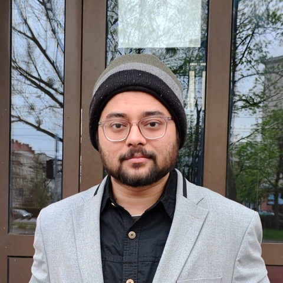

Oct 2021 – ongoing
Ph.D. in Informatics
Doctoral School of Exact and Natural Sciences, Faculty of Informatics, University of Warsaw, Poland
Topic: Topological Data Analysis · read more

Ph.D. student in Informatics at the University of Warsaw, working on Topological Data Analysis, with additional focus on high-dimensional probability, machine learning and randomized algorithms.